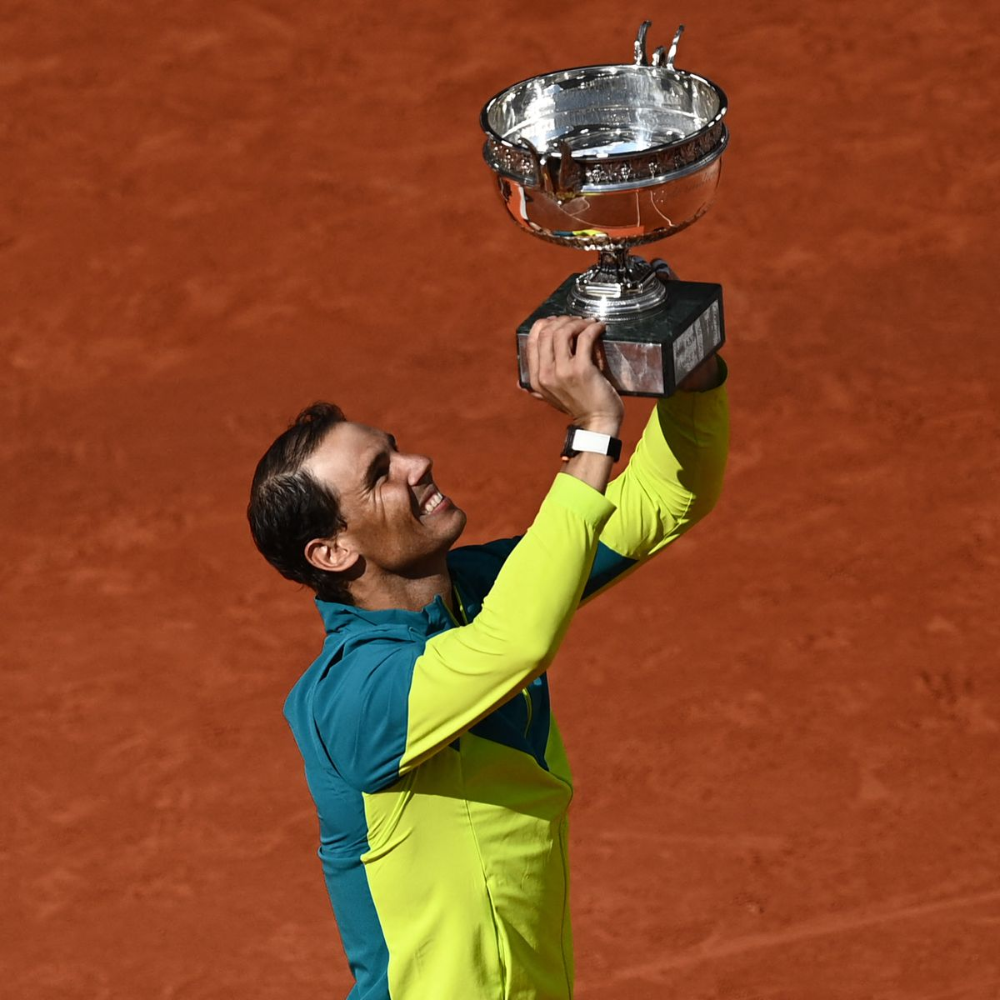

Place: Paris
Surface: Clay
Website:
Center Court: Court Phillipe Chatrier
Some facts...
Located in France, Roland Garros is the second grand slam of the season. Usually, it starts in the last week of May.
The trophies are made of pure silver, designed and made by Maison Mellerio
Since the Open era began in 1968, Mary Pierce was the only French women’s winner in 2000, and Yannick Noah the only French men’s champion in 1983.
The clay courts are actually made of layers of sand and volcanic rocks with a few inches of white limestone and red brick dust.
Most titles:
Men's tennis: Rafael Nadal

Women's tennis: Chris Evert

Here you can have a list of some great matches in the French Open that i've picked :